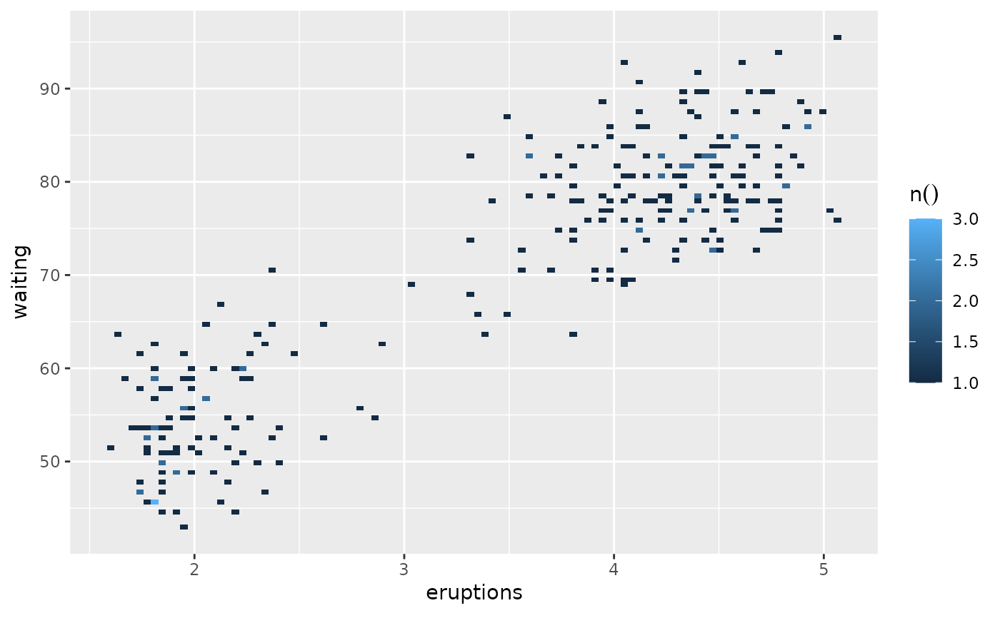
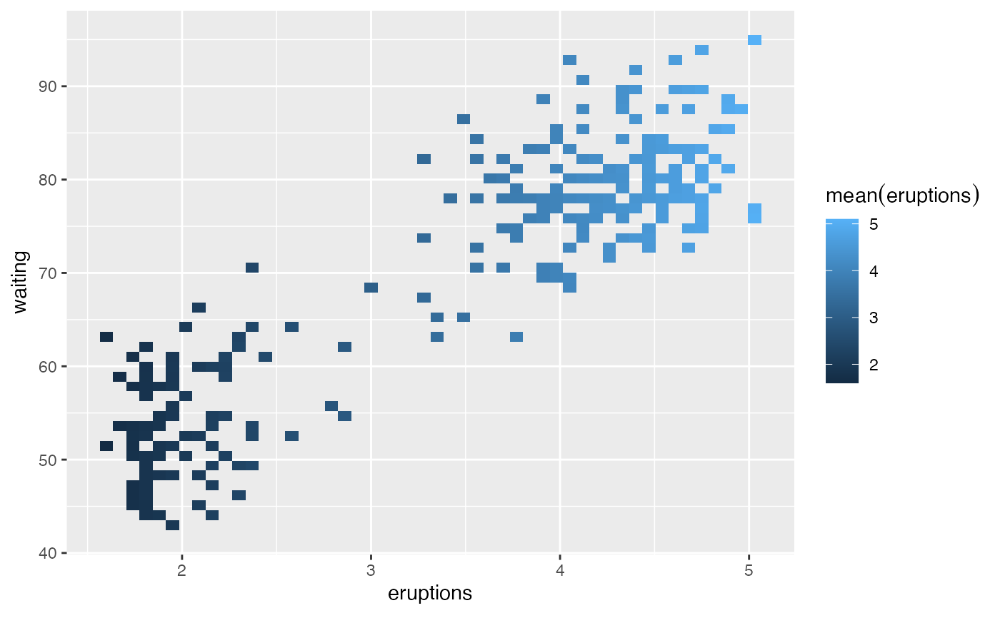

To visualize two continuous variables, we typically resort to a Scatter plot. However, this may not be practical when visualizing millions or billions of dots representing the intersections of the two variables. A Raster plot may be a better option, because it concentrates the intersections into squares that are easier to parse visually.
Uses dplyr operations to aggregate data and ggplot2 to create a raster plot. Because of this approach, the calculations automatically run inside the database if `data` has a database or sparklyr connection. The `class()` of such tables in R are: tbl_sql, tbl_dbi, tbl_spark
Usage
dbplot_raster(data, x, y, fill = n(), resolution = 100, complete = FALSE)Arguments
- data
A table (tbl)
- x
A continuous variable
- y
A continuous variable
- fill
The aggregation formula. Defaults to count (n)
- resolution
The number of bins created per variable. The higher the number, the more records will be imported from the source
- complete
Uses tidyr::complete to include empty bins. Inserts value of 0.
Value
A ggplot object displaying a raster/heatmap plot of the aggregated data across the two continuous variables.
Details
There are two considerations when using a Raster plot with a database. Both considerations are related to the size of the results downloaded from the database:
- The number of bins requested: The higher the bins value is, the more data is downloaded from the database.
- How concentrated the data is: This refers to how many intersections return a value. The more intersections without a value, the less data is downloaded from the database.
Examples
# \dontrun{
library(DBI)
library(dplyr)
library(ggplot2)
con <- dbConnect(duckdb::duckdb(), ":memory:")
db_faithful <- copy_to(con, faithful, "faithful")
# Returns a 100x100 raster plot of record count of intersections of eruptions and waiting
db_faithful |>
dbplot_raster(eruptions, waiting)

# Returns a 50x50 raster plot of eruption averages of intersections of eruptions and waiting
db_faithful |>
dbplot_raster(eruptions, waiting, fill = mean(eruptions), resolution = 50)

dbDisconnect(con)
# }